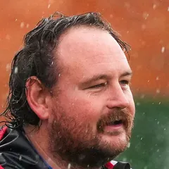

Tom “Willo” WilliamsonHead Coach
Starts his sixth season in charge in 2027. In 2026 the side finished third on the Women's Premier Division ladder, winning 13 of 16 games.
Contact the coach →Assistant coaches
To be announced
SFL · Sydney Football League
Women's Premier
Our flagship women's side, in the first season of the Sydney Football League.
- Training
- Tuesdays & Thursdays, 6:30-8:30pm, David Phillips South
- Home games
- Henson Park, Marrickville
- Standard
- The top level of senior women's football in NSW.